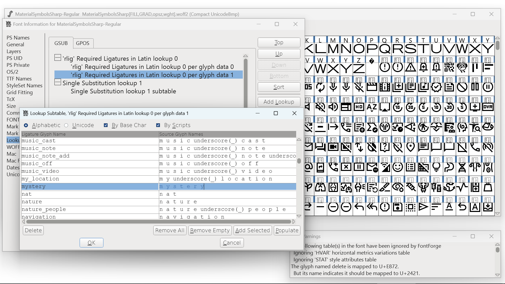
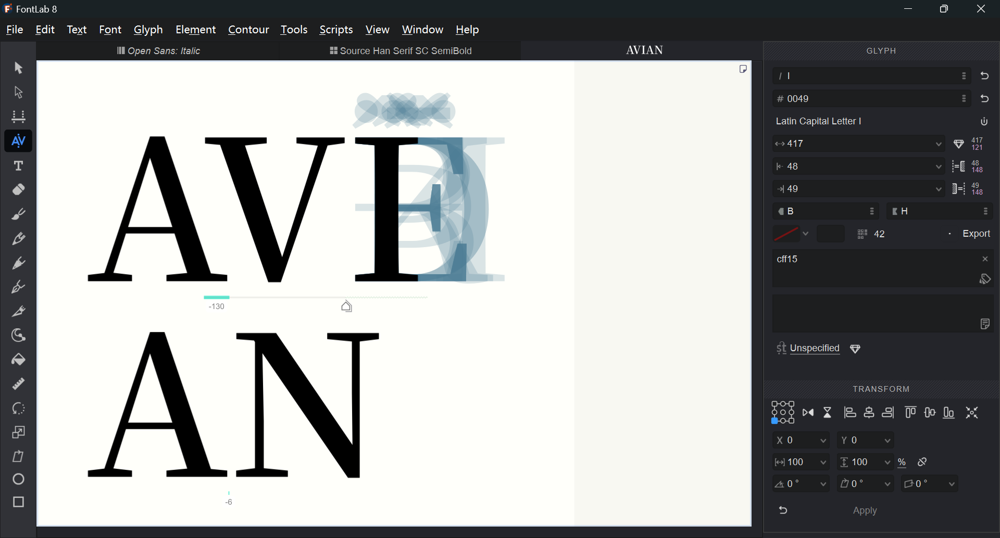

受够了FontForge折磨后，我开始寻找商业字体编辑器。然而，价高质低的产品也不在少数。不是吧，难道FontForge已经算能打的了？
本次目标是绘制熙笃会数字（Cistercian numerals）。
叠加这些字符，可以用一个字符表示1~9999的数字。《巴别塔圣歌》中的数字语言很可能参考了这个系统。
Unicode尚未编码这些字符（参照Background for Unicode consideration of Cistercian numerals），此处采用私用区、重音符号的编码方案，各数位作为重音符号附着在竖线上，这样就不需要创建9999个字符了。
| 码位 | 字符 |
|---|---|
| U+FCC00 | 竖线 |
| U+FCC01~U+FCC09 | 1~9 |
| U+FCC11~U+FCC19 | 10~90 |
| U+FCC21~U+FCC29 | 100~900 |
| U+FCC31~U+FCC39 | 1000~9000 |
要做到正确渲染，需要：
足够智能的字体编辑器应能在见证了1后自动完成2和3。
我只有Windows电脑，所以下列评测都为Windows上的体验。Mac用户请直接冲macOS独占的Glyphs，然后告诉我体验如何。光是看它的文档我都馋死了。
自由软件
最专业的开源字体编辑器，是可以用来检查字体格式是否正确的程度。但代码是陈年屎山，UI更是屎中屎。做过字体相关处理的用户应该或多或少都已经体验过，且再也不想体验第二次了。
八年了仍未支持可变字体，彩色字体更不用提了。
Windows版本经常崩溃，务必做好备份，文件可能被吞掉。（可能Linux版也是。）SFD文件是纯文本，有时候文本编辑器比本体好用。
有一套特有的spiro曲线绘图工具，但因为交互是屎，手感很烂。画布上看起来有参考线，究竟有没有对齐就不好说了。
完整支持GUI编辑OpenType特性，这在商业字体编辑器中都属少见的。
文档很全，所有对话框都有解释。工具提示也会有大段详细说明。
单版本买断US$499（学生US$335），有订阅选项
试用版需要填写电子邮件地址，但其实可以在https://download.fontlab.com/fontlab-8/upd-win64.php直接下载到。
在半天内，遇到了近十个体验或渲染上的问题。


矢量绘图功能比较强大，有画笔、铅笔、速写、钢笔多种笔工具可用。只用了钢笔，手感流畅。缩放工具的手感很独特或诡异。
OpenType特性通过AFDKO特性语言描述，GUI只是代码输入框。
支持一键用上次配置导出，会自动将同名文件重命名后以原名写入，此功能能极大地加速测试反馈循环。
单版本买断制，标准版US$149，专业版US$199，家庭版是废物

试用版邀请填写电子邮件地址，但可以跳过。不管怎样，下载地址是https://www.high-logic.com/FontCreatorSetup-x64.exe。
我用过FontCreator 4，那是纯原生Win32程序。那个版本没有专有格式，直接读写且只支持TrueType（Win32对OpenType的支持本就不好）。没有矢量绘图工具，形状不能布尔运算，拖动轮廓会闪瞎眼。现在这些问题都被解决了。
现在的15版看起来也是上古代码，画布以外的UI大概依旧是Win32，重绘速度很慢，完全重绘（最小化后恢复）需要整整一秒！
Windows原生软件的特色就是乱。界面塞满，工具栏三行，到处都是组件。二十年前的用户交互套上近年的皮肤，格格不入。简体中文翻译不全，且有多处错误。
矢量绘图工具仍然只有钢笔和圆形画笔，加上创建矩形和椭圆的形状工具。要注意的是，字体轮廓没有描边的说法，编辑器也没有提供描边工具，甚至不支持不闭合的曲线和非整数坐标点。在一般矢量图绘制工具中绘制线条的场合，在这里需要手工描边！


绘制字母倒其实没那么大关系，但这会严重加大数学符号类字形的制作难度。可以说在FontCreator中制作数学符号的唯一可靠方法就是用外部工具绘制，转换为轮廓后导入图片。
OpenType特性可GUI编辑，也可用AFDKO、VOLT、OTLFD语言编写，有内置代码编辑器。代码编辑器仅用于导入导出GUI中可设定的属性，并不会在项目文件中保留源代码，也因此可在三种特性语言间自由切换。

按F5可临时安装字体，但字体名每次随机生成。此功能真能加速测试反馈循环吗？毕竟需要安装字体才能使用的软件一般也不支持动态更新字体列表。
每个文种都有些微妙的麻烦在，完全不需要OpenType特性的大概只有图标字体了。不完整支持或不能可视化编辑OpenType特性的字体编辑器可以说是无法投入使用的，所以本次评测略去了对以下软件的详细体验。


没有好用的。
啊咧，这就完了？也就是说，现在Windows上真正能用的字体编辑器也就只有三个，而FontForge甚至是其中之一。
如果想用免费软件，唯一有效选项是FontForge。如有大量自定义OpenType特性需求，且不需要在软件内绘制字形，则可选择FontCreator或FontForge。否则，应该选择FontLab。FontLab的综合体验最佳，但从Mac转来仍有不少水土不服的问题。
.svg){kind=link}